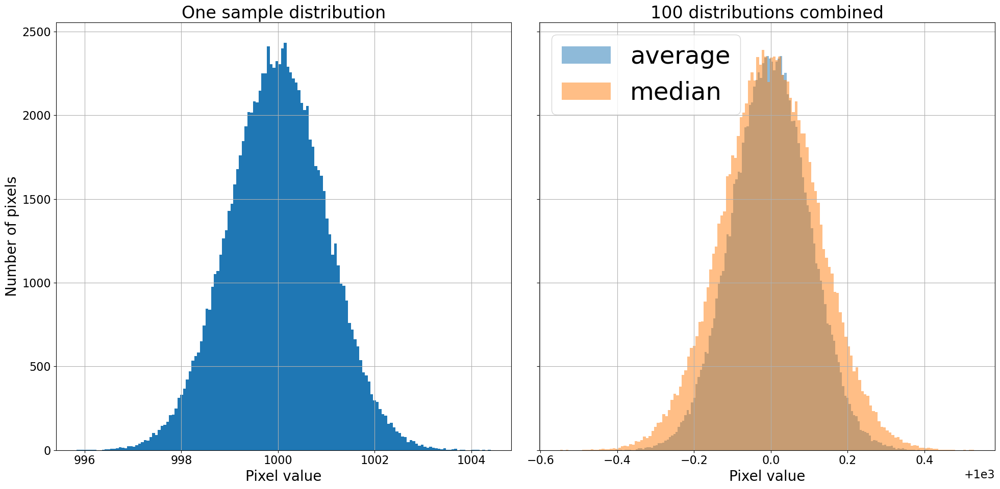
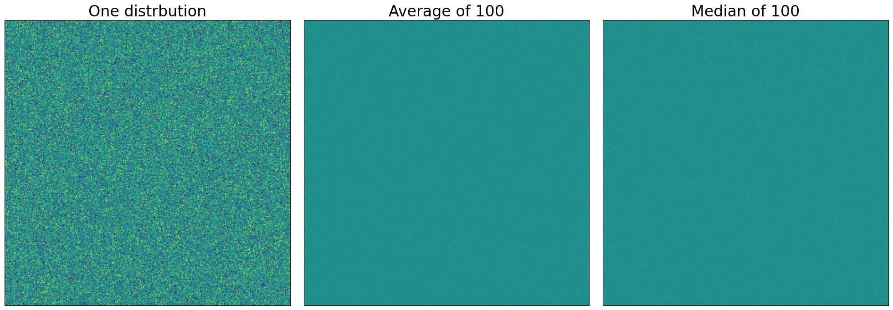
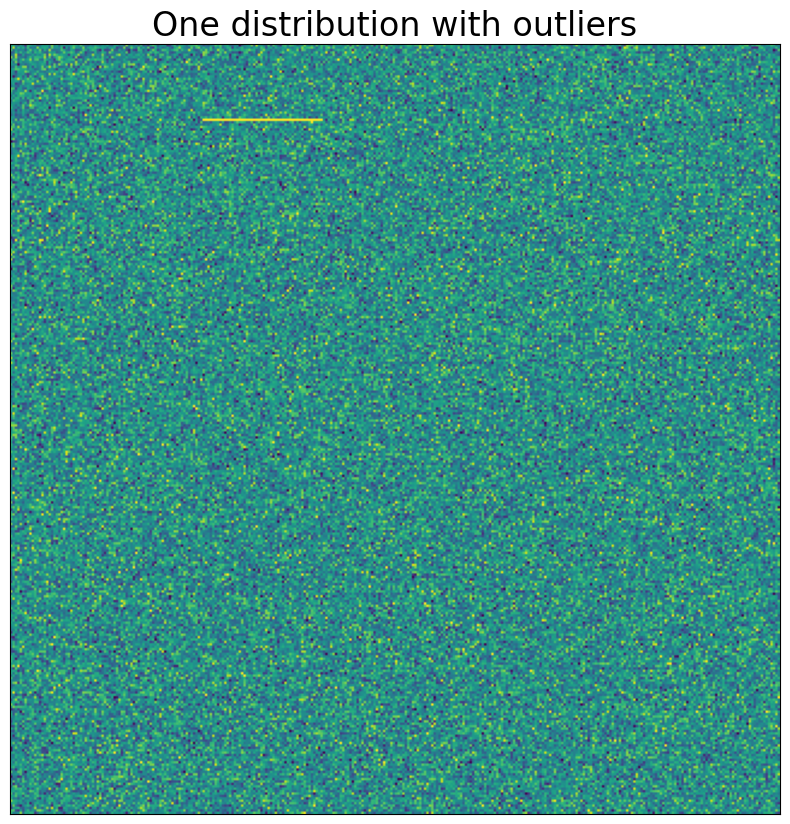
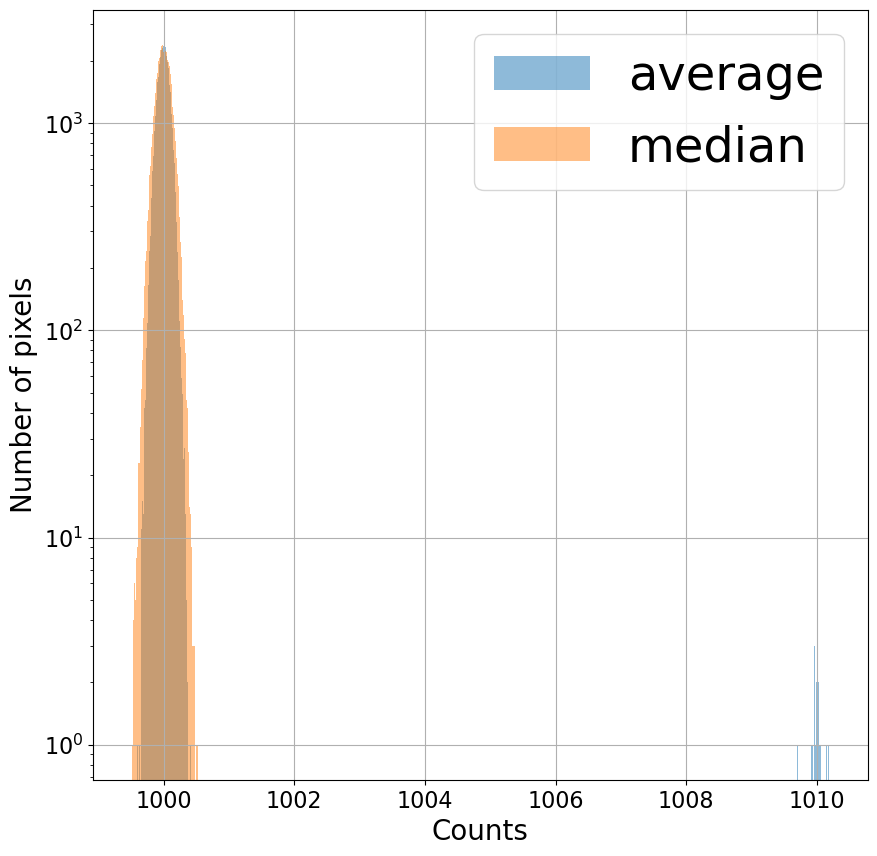
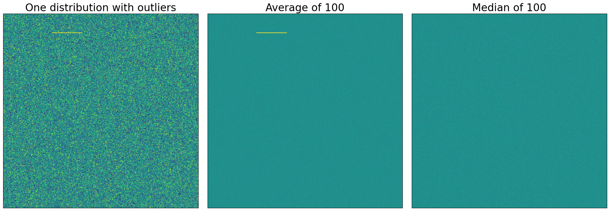
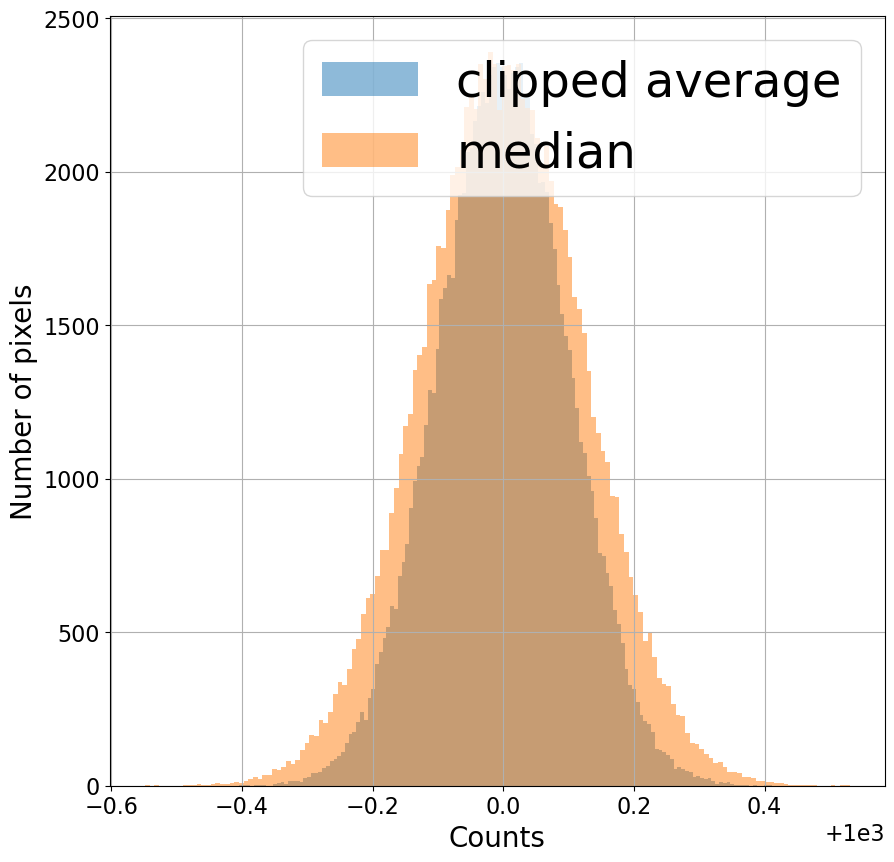

Комбинирование изображений
Contents
1.5. Комбинирование изображений#
Комбинирование изображений служит нескольким целям. Комбинирование изображений:
уменьшает шум в изображениях
может удалить переходные артефакты, такие как космические лучи и треки спутников
может удалить звезды в flat изображениях, сделанных в сумерках
Важно, чтобы было сделано несколько изображений каждого типа калибровки (bias, dark, flat). Их комбинирование уменьшает шум в изображениях примерно в \(1/\sqrt{N}\) раз, где \(N\) — количество комбинируемых изображений. Как показано в предыдущем ноутбуке, использование одного калибровочного изображения фактически увеличивает шум в вашем изображении.
Есть несколько способов комбинировать изображения; если сделано правильно, особенности, которые появляются только на одном из изображений (например, космические лучи), не присутствуют в комбинации. Если сделано неправильно, эти особенности появляются в ваших комбинированных изображениях, а затем загрязняют и ваши откалиброванные научные изображения.
1.5.1. Итог: комбинируйте, усредняя изображения, но отсекайте экстремальные значения#
Оставшаяся часть этого ноутбука демонстрирует этот вывод и объясняет, как выполнить комбинирование усреднением изображений с ccdproc.
import os
import numpy as np
%matplotlib inline
from matplotlib import pyplot as plt
from matplotlib import rc
from astropy.visualization import hist
from astropy.stats import mad_std
# Use custom style for larger fonts and figures
plt.style.use('guide.mplstyle')
# Set some default parameters for the plots below
rc('font', size=20)
rc('axes', grid=True)
# Set up the random number generator, allowing a seed to be set from the environment
seed = os.getenv('GUIDE_RANDOM_SEED', None)
if seed is not None:
seed = int(seed)
# This is the generator to use for any image component which changes in each image, e.g. read noise
# or Poisson error
noise_rng = np.random.default_rng(seed)
1.5.2. Метод комбинирования: среднее или медиана?#
В этом разделе мы рассмотрим упрощенную версию задач комбинирования изображений для уменьшения шума. Справедливо думать об астрономических изображениях (особенно bias и dark изображениях) как о распределении Гаусса значений пикселей вокруг уровня bias и ширине, связанной с read noise детектора. Чтобы упростить дальнейшее, мы будем работать с массивами случайных чисел, взятых из распределения Гаусса, а не с астрономическими изображениями.
В правильно сделанных flat изображениях шум технически является распределением Пуассона, но при достаточно большом количестве отсчетов распределение неотличимо от распределения Гаусса, ширина которого связана с квадратным корнем из числа отсчетов. В то время как некоторые области научного изображения доминируются шумом Пуассона от источников в изображении, большая часть изображения будет доминироваться гауссовым read noise от детектора или шумом Пуассона от фона неба.
Вместо работы с комбинацией изображений мы создадим 100 распределений Гаусса со средним значением ноль и стандартным отклонением один и объединим их двумя разными способами: найдя среднее и найдя медиану. Каждое распределение имеет размер \(320^2\), так что мы можем рассматривать его либо как распределение из 102,400 значений, либо как изображение размером \(320 \times 320\).
Мы можем думать о каждом из этих 100 распределений как представляющем изображение, такое как bias или dark. Чтобы сделать аналогию с реальными изображениями немного более прямой, “bias” в 1000 добавляется к каждому распределению.
n_distributions = 100
bias_level = 1000
n_side = 320
bits = noise_rng.normal(size=(n_distributions, n_side**2)) + bias_level
average = np.average(bits, axis=0)
median = np.median(bits, axis=0)
Теперь, когда мы создали распределения и объединили их двумя разными способами, давайте посмотрим на них. Функция hist из astropy.visualization используется ниже, потому что она может определить размер bin для ваших данных.
fig, ax = plt.subplots(1, 2, sharey=True, tight_layout=True, figsize=(20, 10))
hist(bits[0, :], bins='freedman', ax=ax[0]);
ax[0].set_title('One sample distribution')
ax[0].set_xlabel('Pixel value')
ax[0].set_ylabel('Number of pixels')
hist(average, bins='freedman', label='average', alpha=0.5, ax=ax[1]);
hist(median, bins='freedman', label='median', alpha=0.5, ax=ax[1]);
ax[1].set_title('{} distributions combined'.format(n_distributions))
ax[1].set_xlabel('Pixel value')
ax[1].legend()
<matplotlib.legend.Legend at 0x7fd01cdf4290>

Комбинирование усреднением дает более узкое (т.е. менее зашумленное) распределение, чем комбинирование медианой, хотя оба существенно уменьшили ширину распределения. Вывод на данный момент заключается в том, что комбинирование усреднением слегка предпочтительнее комбинирования медианой. В вычислительном отношении среднее также вычисляется быстрее, чем медиана.
1.5.2.1. Представление этих распределений в виде изображения#
Как предложено выше, мы могли бы рассматривать каждое из этих распределений как изображение, а не как гистограмму. Один вывод из диаграммы ниже заключается в том, что в этом случае разница между средним и медианой не очевидна.
Во всех случаях экстремальные значения отображения изображения установлены так, чтобы охватить ширину исходного распределения.
fig, axes = plt.subplots(1, 3, sharey=True, tight_layout=True, figsize=(20, 10))
data_source = [bits[0, :], average, median]
titles = ['One distrbution', 'Average of {n}'.format(n=n_distributions), 'Median of {n}'.format(n=n_distributions)]
for axis, data, title in zip(axes, data_source, titles):
axis.imshow(data.reshape(n_side, n_side), vmin=bias_level - 3, vmax=bias_level + 3)
axis.set_xticks([])
axis.set_yticks([])
axis.grid(False)
axis.set_title(title)

1.5.3. Эффект выбросов#
Предположим, что только в одном из 100 распределений, которые мы комбинируем, есть небольшое количество экстремальных значений. В астрономических изображениях эти экстремумы происходят очень часто из-за попаданий космических лучей на детектор, которые вызывают в одном небольшом участке калибровочного изображения гораздо более высокие отсчеты. Другой случай возникает при комбинировании сумеречных flat, которые часто содержат слабые изображения звезд.
В примере ниже мы устанавливаем только 50 точек из 102,400 в первом распределении на несколько более высокое значение, чем остальные.
bits[0, 10000:10050] = 2 * bias_level
Помните, мы можем думать о значениях в этом распределении как об изображении, представление, которое будет особенно удобно в этом случае.
plt.imshow(bits[0, :].reshape(n_side, n_side), vmin=bias_level - 3, vmax=bias_level + 3)
plt.xticks([])
plt.yticks([])
plt.title('One distribution with outliers')
plt.grid(False)

Теперь, когда мы знаем, как выглядят выбросы в этом (и только в этом) распределении, мы объединим все распределения, как мы делали выше.
average = np.average(bits, axis=0)
median = np.median(bits, axis=0)
Даже несмотря на то, что только одно из 100 “изображений”, которые мы комбинируем, имеет эти высокие значения пикселей, распределение пикселей для среднего явно затронуто (хорошо, может быть, не явно, поскольку для того, чтобы увидеть это, требуется логарифмическая ось \(y\)). Распределение для медианы выглядит примерно так же, как и выше. Поскольку медиана просто ищет среднее значение, экстремальное значение не сильно влияет на результат.
plt.figure(figsize=(10, 10))
hist(average, bins='freedman', alpha=0.5, label='average');
hist(median, bins='freedman', alpha=0.5, label='median');
plt.legend()
plt.xlabel('Counts')
plt.ylabel('Number of pixels')
plt.semilogy();

1.5.3.1. Комбинирование с использованием среднего оказывает заметное влияние на результат; медиана удаляет артефакт#
Эффект выброса гораздо яснее, если распределения отображаются как изображения. Если распределения, которые мы комбинируем, были калибровочными изображениями, то выбросы, которые появляются на одном изображении (например, космический луч), повлияли бы на комбинированное изображение, которое мы надеялись использовать для калибровки.
fig, axes = plt.subplots(1, 3, sharey=True, tight_layout=True, figsize=(20, 10))
data_source = [bits[0, :], average, median]
titles = ['One distribution with outliers', 'Average of {n}'.format(n=n_distributions), 'Median of {n}'.format(n=n_distributions)]
for axis, data, title in zip(axes, data_source, titles):
axis.imshow(data.reshape(n_side, n_side), vmin=bias_level - 3, vmax=bias_level + 3)
axis.set_xticks([])
axis.set_yticks([])
axis.grid(False)
axis.set_title(title)

С одной стороны, шумовые свойства лучше, когда вы комбинируете, беря среднее. С другой стороны, медиана устраняет особенности, которые появляются только на одном изображении.
Астрономические изображения почти всегда будут иметь эти переходные особенности. Даже в обсерватории вблизи уровня моря при очень короткой экспозиции попадания космических лучей обычны.
1.5.4. Решение: комбинирование усреднением, но с отсечением экстремальных значений#
Ответ здесь заключается в том, чтобы сначала отсечь экстремальные значения из распределений, а затем объединить, используя среднее. Это отвергает выбросы, как медиана, но с умеренно лучшими статистическими свойствами среднего. Метод, называемый “sigma clipping”, используется для удаления экстремальных значений.
Пожалуйста, не используйте код ниже для редукции ваших данных…
…в следующем наборе ноутбуков мы пройдем через пакет ccdproc, который автоматизирует большую часть того, что вы видите ниже. Раздел ниже демонстрирует и объясняет некоторые вещи, происходящие за кулисами в ccdproc.
1.5.4.1. Sigma clipping#
Sigma clipping означает вычисление того, насколько “далеко” каждый пиксель, который нужно объединить, находится от “типичного” значения, и исключение значений из комбинации, если они “слишком далеко” от значения пикселя.
Для ясности, при оценке того, какие значения отвергать, мы делаем это для каждой из 102,400 точек в распределении (или, если хотите, каждого из 320\(\times\)320 пикселей в изображении), которые мы собираемся объединить. Другими словами, для каждой точки (или пикселя) мы вычислим “типичное” значение для 100 распределений (изображений), которые мы комбинируем, и исключим любые из среднего, которые “слишком далеко” от “типичного значения”.
Что следует использовать в качестве “типичного” значения, как мы измеряем, насколько “далеко” находится значение, и насколько далеко — это “слишком далеко”?
На последний вопрос легче всего ответить: это немного зависит от уровня шума в вашей камере, но что-то вроде 5 дальше от “типичного” значения, чем большинство пикселей.
Использование среднего в качестве типичного значения и стандартного отклонения в качестве меры того, насколько далеко конкретное значение находится от типичного значения, часто не является лучшим выбором. Проблема с этим заключается в том, что выбросы в одном распределении (или изображении) сильно смещают среднее и преувеличивают стандартное отклонение. В этом примере, где мы комбинируем 100 распределений (изображений), использование среднего и стандартного отклонения может сработать, поскольку распределений так много. Более типичное количество bias или dark изображений, которые можно комбинировать, составляет 10 или 20. В этом случае экстремальное значение на одном изображении сильно влияет на среднее и стандартное отклонение.
В качестве примера рассмотрим комбинирование 10, 20 или 100 наших распределений, как показано в ячейке ниже. Только в случае 100 распределений наше экстремальное значение 2000 было бы исключено, если бы мы исключали значения более чем в 5 раз превышающие стандартное отклонение от среднего.
print('Number combined\t Average\t Standard dev σ \t 10σ ')
for n_to_combine in [10, 20, n_distributions]:
avg = np.mean(bits[:n_to_combine, 10000])
std = np.std(bits[:n_to_combine, 10000])
print('{n:10d}\t{avg:10.2f}\t{std:10.2f}\t{ten_sig:10.2f}'.format(n=n_to_combine,
avg=avg,
std=std, ten_sig=10 * std))
Number combined Average Standard dev σ 10σ
10 1099.72 300.09 3000.93
20 1049.81 217.99 2179.93
100 1009.90 99.51 995.14
Лучший выбор — использовать медиану в качестве типичного значения и медианное абсолютное отклонение вместо стандартного отклонения в качестве меры того, насколько далеко значение находится от типичного значения. Медианное абсолютное отклонение, или MAD, набора точек \(x\) определяется как:
$\(
\text{MAD} = \text{median}\big( x_i - \text{median}(x) \big).
\)$
Это мера типичного абсолютного расстояния от медианы набора значений. MAD не эквивалентен напрямую стандартному отклонению. Связь между ними зависит от распределения значений, но для распределения Гаусса умножение MAD на 1.4826 делает свое дело. Функция astropy mad_std вычислит MAD и умножит на соответствующий коэффициент для вас.
Повторение вычисления выше, но с медианой в качестве центрального значения и MAD вместо стандартного отклонения, демонстрирует, что даже для 10 распределений экстремальное значение будет исключено.
print('{:^20}{:^20}{:^20}{:^20}'.format('Number combined', 'Median', 'MAD σ', '10σ'))
for n_to_combine in [10, 20, n_distributions]:
avg = np.median(bits[:n_to_combine, 10000])
std = mad_std(bits[:n_to_combine, 10000])
print('{n:^20d}{avg:^20.2f}{std:^20.2f}{ten_sig:^20.2f}'.format(n=n_to_combine,
avg=avg,
std=std, ten_sig=10 * std))
Number combined Median MAD σ 10σ
10 1000.11 0.94 9.41
20 1000.21 1.28 12.75
100 999.88 0.87 8.73
Недостаток использования медианы и медианного абсолютного отклонения? Они могут быть медленными для вычисления для больших изображений или больших стеков изображений.
Ячейки ниже выполняют фактическое отсечение; вы обычно должны использовать функцию astropy sigma_clip для этого, но здесь мы сделаем это вручную, чтобы проиллюстрировать процесс.
Мы начинаем с вычисления оценщика стандартного отклонения MAD для наших данных.
mad_sigma = mad_std(bits, axis=0)
Выражение ниже истинно для всех точек, удаленных более чем на \(10 \sigma_{MAD}\) от медианы распределений, и ложно везде. Этот массив будет использоваться для исключения экстремальных точек.
exclude = (bits - median) / mad_sigma > 10
Далее мы вычисляем среднее, исключая точки, идентифицированные как “слишком далеко” от медианы. Здесь мы можем использовать два подхода. Один — использовать маскированные массивы numpy; другой — временно установить исключенные значения в специальное значение np.nan и использовать функцию numpy, которая исключает nan из вычисления. Последний подход часто быстрее, чем первый.
Лучший подход — действительно использовать функцию более высокого уровня из astropy для ccdproc. Они позаботятся о деталях реализации отсечения для вас.
original_values = bits[exclude]
bits[exclude] = np.nan
clip_combine = np.nanmean(bits, axis=0)
bits[exclude] = original_values
1.5.5. Резюме#
Комбинируйте изображения путем (1) исключения экстремальных значений с использованием sigma clipping, с медианой в качестве типичного значения и оценщиком MAD стандартного отклонения, а затем (2) усреднения оставшихся пикселей по всем изображениям.
Обратите внимание, что в распределении ниже отсеченное среднее является более узким распределением (меньше шума), чем медиана, но оно все еще исключает экстремальное значение, которое появилось на одном изображении.
plt.figure(figsize=(10, 10))
hist(clip_combine, bins='freedman', alpha=0.5, label='clipped average')
hist(median, bins='freedman', alpha=0.5, label='median');
plt.legend()
plt.xlabel('Counts')
plt.ylabel('Number of pixels')
Text(0, 0.5, 'Number of pixels')
